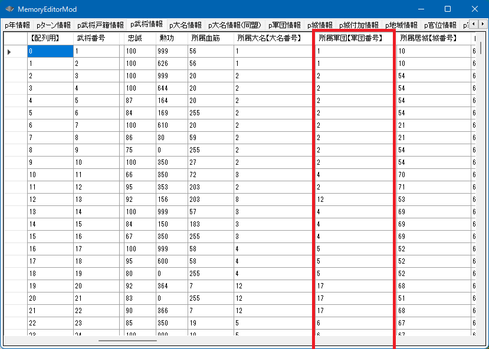

所属血筋
天翔記にはそれぞれの武将に「血筋」が設定されている。
それぞれの血筋は「天翔記wikiの血筋のページ を参照するのが良いだろう。
0～255を取る。0～253ならば、値が同じなら一門とみなされる。254の血筋はなぜか存在していない。
255(=0xFF)は、「(天翔記においては)血筋なし」ということであり、特定の血筋は設定しないという意味。
天翔記的には、血筋が同じであれば、「一門」扱いとなる。

p武将情報[ix].所属血筋
特定の武将と同じ血筋の人を探す
void カスタム::On_プレイヤ担当ターン《メイン画面》() {
int i信長のBushouID = Get_武将番号【配列用】(顔番号::織田信長);
if (0 <= i信長のBushouID && i信長のBushouID < 最大数::武将情報::配列数) {
int 信長の所属血筋 = p武将情報[i信長のBushouID].所属血筋;
for (int iBushouID = 0; iBushouID < 最大数::武将情報::配列数; iBushouID++) {
// 死んでない
if (p武将戸籍情報[iBushouID].状態 != 状態::死亡 && p武将戸籍情報[iBushouID].戦死 == false) {
if (p武将情報[iBushouID].所属血筋 == 信長の所属血筋) {
デバッグ出力 << Get_名字(iBushouID) + Get_名前(iBushouID) << "は" << "信長と同じ血筋です。" << endl;
}
}
}
}
}
特定の武将の血筋を、別の武将の血筋と同じものにする
void カスタム::On_プレイヤ担当ターン《メイン画面》() {
int i信長のBushouID = Get_武将番号【配列用】(顔番号::織田信長);
int i勝家のBushouID = Get_武将番号【配列用】(顔番号::柴田勝家);
if (0 <= i信長のBushouID && i信長のBushouID < 最大数::武将情報::配列数 &&
0 <= i勝家のBushouID && i勝家のBushouID < 最大数::武将情報::配列数 ) {
// 柴田勝家の血筋を織田信長の血筋へと変更
p武将情報[i勝家のBushouID].所属血筋 = p武将情報[i信長のBushouID].所属血筋;
}
}
親顔番号
P武将情報[ix].親顔番号
親顔番号が設定してあれば、それは父親ということになる。
親顔番号が設定してあっても、血筋番号が親とは異なるといった場合もあり、これは養子ということを意味する。
親の顔番号が、別の武将の顔番号と一致する武将が存在すれば、親は天翔記の武将データとして存在することを意味している。
一致するような武将が居なければ天翔記には存在していないことになるが、例え存在していなくとも、
同じ親顔番号が同じなのであれば、(たとえその親顔番号の武将が天翔記に存在せずとも)、２人は兄弟姉妹である。
とある武将の親顔番号が同じ者を探す(その瞬間ゲーム内に存在しいている武将や姫の範囲で)
void カスタム::On_プレイヤ担当ターン《メイン画面》() {
for (int iBushouID = 0; iBushouID < 最大数::武将情報::配列数; iBushouID++) {
int 親顔番号 = p武将情報[iBushouID].親顔番号;
if (p武将情報[iBushouID].親顔番号 == 0xFFFF) {
デバッグ出力 << "親顔番号は設定されていません" << endl;
continue;
}
デバッグ出力 << "今現在伊、ゲーム内に存在している範囲で、" + Get_名字(iBushouID) + Get_名前(iBushouID) << "の兄弟を探します" << endl;
for (int iSearchBushouID = 0; iSearchBushouID < 最大数::武将情報::配列数; iSearchBushouID++) {
if (iBushouID == iSearchBushouID) { continue; } // 自分はパス
if (p武将情報[iSearchBushouID].親顔番号 == 0xFFFF) {
continue;
}
// 0xFFFF 以外の値が設定されていて、２人の武将が同じ親顔番号であれば、それは兄弟である(但し養子などもあり得るため、血縁はないかもしいれない)
if (p武将情報[iBushouID].親顔番号 == p武将情報[iSearchBushouID].親顔番号) {
デバッグ出力 << Get_名字(iSearchBushouID) + Get_名前(iSearchBushouID) << "と親が同じです。";
if (p武将情報[iBushouID].所属血筋 != p武将情報[iSearchBushouID].所属血筋) {
デバッグ出力 << "但し血筋番号がことなるため、義理の兄弟姉妹という扱いです。";
}
デバッグ出力 << endl;
}
}
デバッグ出力 << "----------------------------------以上" << endl;
}
}
とある武将の親顔番号を指定して親子にする
天翔記の1300人の武将のいずれかを親とするなら、0～1299の範囲の「顔番号::***」を探し、その番号をあてて下さい。
void カスタム::On_プレイヤ担当ターン《メイン画面》() {
int iBushouID = Get_武将番号【配列用】(顔番号::羽柴秀吉);
if (0 <= iBushouID && iBushouID < 最大数::武将情報::配列数) {
// 羽柴秀吉の父として織田信長とする。これは親としての番号の入れ替えだけなので、養子状態。
p武将情報[iBushouID].親顔番号 = 顔番号::織田信長;
}
}

「あたらしい架空の親番号」を設定する際には7000～7999の間の番号を推奨します。
これらは顔画像なども共有物として提供されることはなく、またモンタージュの顔番号とも決して被ることはない。
とある武将同士の親顔番号を一緒にして、兄弟姉妹にする
ここでは理解を簡単にするため、歴史上の人物に対して設定しているが、
実際にはScenarioModで作成した架空武将等に対して、架空の親顔番号を割り当てることが多いいだろう。
void カスタム::On_プレイヤ担当ターン《メイン画面》() {
int i佐々BushouID = Get_武将番号【配列用】(顔番号::佐々成政);
int i明智BushouID = Get_武将番号【配列用】(顔番号::明智光秀);
if (0 <= i佐々BushouID && i佐々BushouID < 最大数::武将情報::配列数) {
if (0 <= i明智BushouID && i明智BushouID < 最大数::武将情報::配列数) {
// 架空の親顔番号 を共有することで、血は繋がっていないが２人だけ義兄弟のようになる
// 顔番号::7000 という架空の武将が二人の共通の親として存在したというい想定
p武将情報[i佐々BushouID].親顔番号 = 7000;
p武将情報[i明智BushouID].親顔番号 = 7000;
}
}
}
所属大名
p武将情報[ix].所属大名【大名番号】
とある武将がどの大名に所属しているかを得る
この項目はとても重要ですので理解が必須です。
ScenarioModが自由に使いこなせるか否かの境界線は、概ねこのあたりを理解しているかどうかがカギです。
p武将情報[ix].所属大名【大名番号】-1
とすることで、
大名 にアクセスするための【配列用】の番号を得ることが出来ます。
void カスタム::On_プレイヤ担当ターン《メイン画面》() {
int iBushouID = Get_武将番号【配列用】(顔番号::柴田勝家);
if (0 <= iBushouID && iBushouID < 最大数::武将情報::配列数) {
// 武将が所属する大名家の番号【配列用】を求める
int iDaimyoID = p武将情報[iBushouID].所属大名【大名番号】 - 1; // 大名番号 ⇒ 大名番号【配列用】
if (0 <= iDaimyoID && iDaimyoID < 最大数::大名情報::配列数) {
int i大名のBushouID = p大名情報[iDaimyoID].大名【武将番号】 - 1; // こんどは大名家を支配する武将の武将番号【配列用】を得ている
if (0 <= i大名のBushouID && i大名のBushouID < 最大数::武将情報::配列数) {
デバッグ出力 << Get_名字(iBushouID) + Get_名前(iBushouID) << "は、" << Get_名字(i大名のBushouID) + Get_名前(i大名のBushouID) << "の支配する大名家に帰属しています。" << endl;
}
}
}
}
織田信長が大名のとき、すべての武将の中から織田家に使える武将を探す
void カスタム::On_プレイヤ担当ターン《メイン画面》() {
int i信長のBushouID = Get_武将番号【配列用】(顔番号::織田信長);
if (0 <= i信長のBushouID && i信長のBushouID < 最大数::武将情報::配列数) {
// 信長が大名なら
if (p武将戸籍情報[i信長のBushouID].状態 == 状態::大名) {
int i織田信長の帰属する大名番号 = p武将情報[i信長のBushouID].所属大名【大名番号】;
for (int iBushouID = 0; iBushouID < 最大数::武将情報::配列数; iBushouID++) {
if (p武将情報[iBushouID].所属大名【大名番号】 == i織田信長の帰属する大名番号) {
デバッグ出力 << Get_名字(iBushouID) + Get_名前(iBushouID) << "は、信長の支配する大名家に帰属しています" << endl;
}
}
}
}
}
「所属大名【大名番号】」の値をうかつに変更してはならない
データの辻褄があわなくなり、崩壊します。
Set_武将転居(...) などを利用してください。
所属軍団

p武将情報[ix].所属軍団【軍団番号】
とある武将がどの軍団に所属しているかを得る
この項目はとても重要ですので理解が必須です。
ScenarioModが自由に使いこなせるか否かの境界線は、概ねこのあたりを理解しているかどうかがカギです。
p武将情報[ix].所属軍団【軍団番号】-1
とすることで、
軍団 にアクセスするための【配列用】の番号を得ることが出来ます。
void カスタム::On_プレイヤ担当ターン《メイン画面》() {
int iBushouID = Get_武将番号【配列用】(顔番号::柴田勝家);
if (0 <= iBushouID && iBushouID < 最大数::武将情報::配列数) {
// 武将が所属する軍団家の番号【配列用】を求める
int iGundanID = p武将情報[iBushouID].所属軍団【軍団番号】 - 1; // 軍団番号 ⇒ 軍団番号【配列用】
if (0 <= iGundanID && iGundanID < 最大数::軍団情報::配列数) {
int i軍団長のBushouID = p軍団情報[iGundanID].軍団長【武将番号】 - 1; // こんどは軍団を支配する軍団長の武将としての武将番号【配列用】を得ている
if (0 <= i軍団長のBushouID && i軍団長のBushouID < 最大数::武将情報::配列数) {
デバッグ出力 << Get_名字(iBushouID) + Get_名前(iBushouID) << "は、" << Get_名字(i軍団長のBushouID) + Get_名前(i軍団長のBushouID) << "の支配する軍団に帰属しています。" << endl;
}
}
}
}
明智光秀が軍団長のとき、すべての武将の中から明智光秀の軍団に使える武将を探す
void カスタム::On_プレイヤ担当ターン《メイン画面》() {
int i光秀のBushouID = Get_武将番号【配列用】(顔番号::明智光秀);
if (0 <= i光秀のBushouID && i光秀のBushouID < 最大数::武将情報::配列数) {
// 信長が軍団なら
if (p武将戸籍情報[i光秀のBushouID].状態 == 状態::軍団長) {
int i明智光秀の帰属する軍団番号 = p武将情報[i光秀のBushouID].所属軍団【軍団番号】;
for (int iBushouID = 0; iBushouID < 最大数::武将情報::配列数; iBushouID++) {
if (p武将情報[iBushouID].所属軍団【軍団番号】 == i明智光秀の帰属する軍団番号) {
デバッグ出力 << Get_名字(iBushouID) + Get_名前(iBushouID) << "は、光秀の支配する軍団に帰属しています" << endl;
}
}
}
}
}
「所属軍団【軍団番号】」の値をうかつに変更してはならない
データの辻褄があわなくなり、崩壊します。
Set_武将転居(...) などを利用してください。
所属城
p武将情報[ix].所属居城【城番号】
とある武将がどの城に所属しているかを得る
この項目はとても重要ですので理解が必須です。
ScenarioModが自由に使いこなせるか否かの境界線は、概ねこのあたりを理解しているかどうかがカギです。
p武将情報[ix].所属居城【城番号】-1
とすることで、
城 にアクセスするための【配列用】の番号を得ることが出来ます。
武将がどこの城にいるのかを表示する
for ( int iBushouID = 0; iBushouID < 最大数::武将情報::配列数; iBushouID++) {
// 死んでない
if (p武将戸籍情報[iBushouID].状態 != 状態::死亡 && p武将戸籍情報[iBushouID].戦死 == false) {
int iCastleID = p武将情報[iBushouID].所属居城【城番号】 - 1;
if (0 <= iCastleID && iCastleID < 最大数::城情報::配列数) {
デバッグ出力 << Get_名字(iBushouID) + Get_名前(iBushouID) << "は" << Get_城名(iCastleID) + Get_城称(iCastleID) << "に居ます" << endl;
}
}
}
武将がど特定の城に帰属するか判定する
void カスタム::On_プレイヤ担当ターン《メイン画面》() {
for ( int iBushouID = 0; iBushouID < 最大数::武将情報::配列数; iBushouID++) {
// 死んでない
if (p武将戸籍情報[iBushouID].状態 != 状態::死亡 && p武将戸籍情報[iBushouID].戦死 == false) {
int iCastleID = p武将情報[iBushouID].所属居城【城番号】 - 1;
if (iCastleID == 城配列番号::二条城) {
デバッグ出力 << Get_名字(iBushouID) + Get_名前(iBushouID) << "は" << Get_城名(iCastleID) + Get_城称(iCastleID) << "に居ます" << endl;
}
}
}
}
「所属居城【城番号】」の値をうかつに変更してはならない
データの辻褄があわなくなり、崩壊します。
Set_武将転居(...) などを利用してください。
より詳細を知るには...
「武将 － 所属」に関する主な所は以上となります。
詳しくは「武将情報型.h」や「武将情報列挙.h」を参照してください。